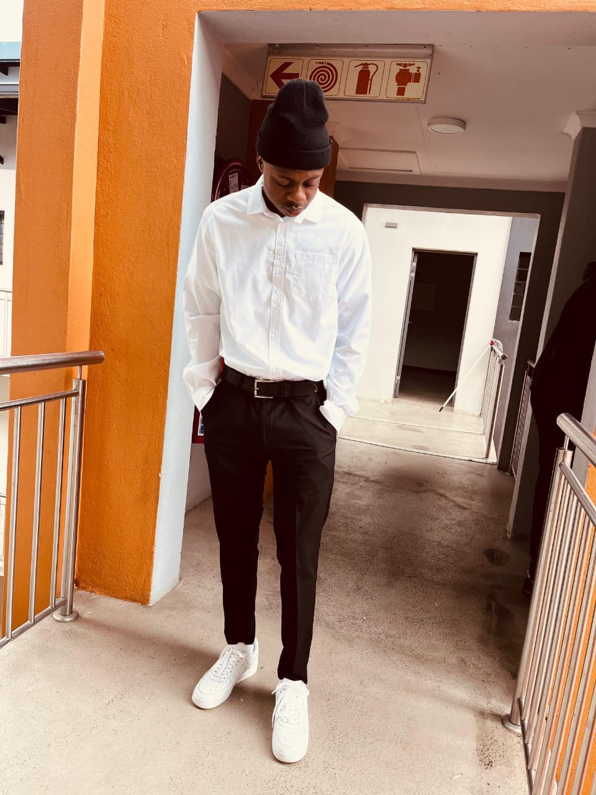

Personal Brand Portfolio
I’m Siyabonga Khosa, an Advanced Diploma ICT student using technology, discipline, and purpose to build meaningful solutions and a life of impact.

Who I Am
I’m Siyabonga Khosa, an Advanced Diploma ICT student focused on becoming a strong software developer through consistent learning, practical projects, and personal growth.
My journey is shaped by technology, football, faith, and the determination to build a future bigger than my circumstances.
My Journey
I am an Advanced Diploma ICT student with a deep passion for software development, growth, and building a meaningful life. My journey has not been easy, but every challenge has shaped my mindset, discipline, and hunger to become more.
Football taught me resilience. Faith keeps me grounded. Technology gives me a tool to create impact. This website is not just about my work — it is about the person I am becoming.
My Timeline
I committed myself to growth in ICT, learning the foundations of technology and starting to see a bigger future for myself.
Challenges tested my mindset, but they also built resilience, discipline, and a stronger belief in what I am capable of.
I worked on practical software ideas and continued shaping my identity as a developer who wants to build solutions that matter.
I stepped into a new chapter focused on sharpening my skills, telling my story, and building a future with more purpose.
Skills
What Drives Me
I believe consistency matters more than motivation. I keep showing up.
I am committed to learning, improving, and becoming stronger in every season.
I want to build software that solves real problems and reflects who I am.
Contact
I’m growing, learning, and open to opportunities that align with impact and progress.
Projects
Kotlin • Android • Room Database
An Android app built for creating, managing, searching, and completing daily tasks with a practical and clean user experience.
View ProjectConcept Platform • Student Collaboration
A smart academic support platform focused on student collaboration, mentoring, productivity, and meaningful academic support.
View ProjectKotlin • Mobile Development
A mobile solution designed to help farmers access real-time weather updates and market prices in a simple and useful way.
View Project